JK制服

jk制服分为水手服和西式制服两种，水手服按领襟的形状分为四种：札幌襟、关东襟、关西襟、名古屋襟，现在还出现了变形襟。 而“本”指的是襟线的根数，例如白一本即指领子上缝有一根白色的襟线，亲子指两条襟线一粗一细，异色指襟线颜色不同。 西式一般搭配是衬衫加百褶裙，配有领结或领带等装饰。百褶裙按款式分为轮褶、箱褶等，按图案分为纯色裙和格裙。一般水手服配纯色裙、西式着格裙。 此外还有背心裙、马甲等稍特殊的单品。
JK制服 |
|||
| 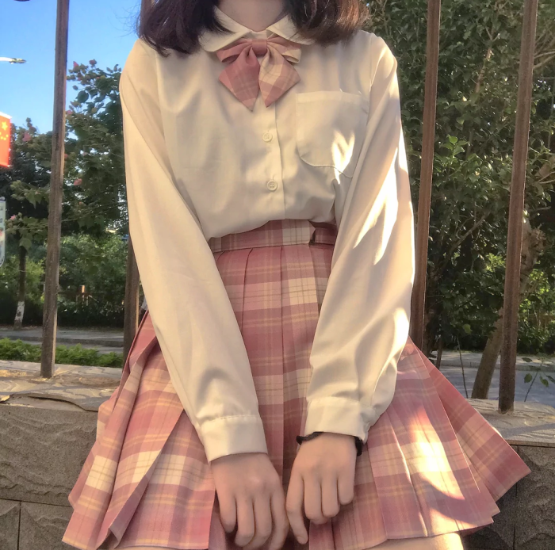 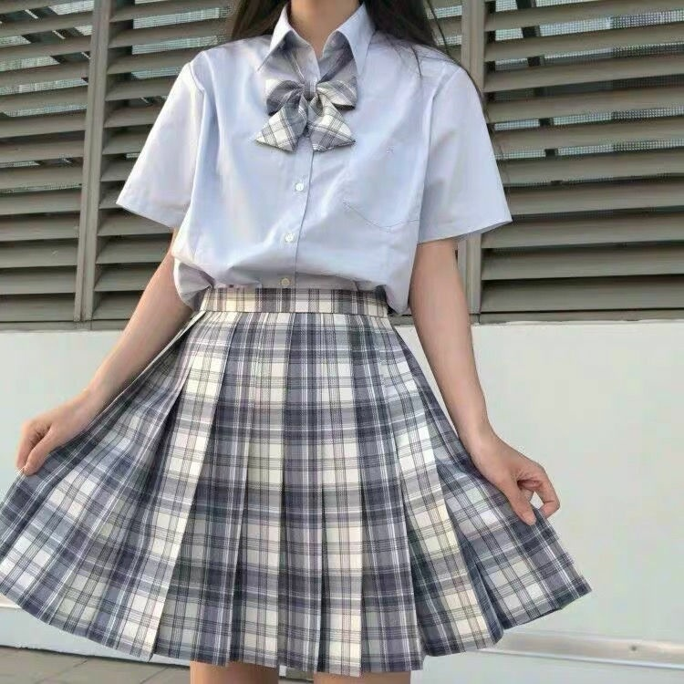 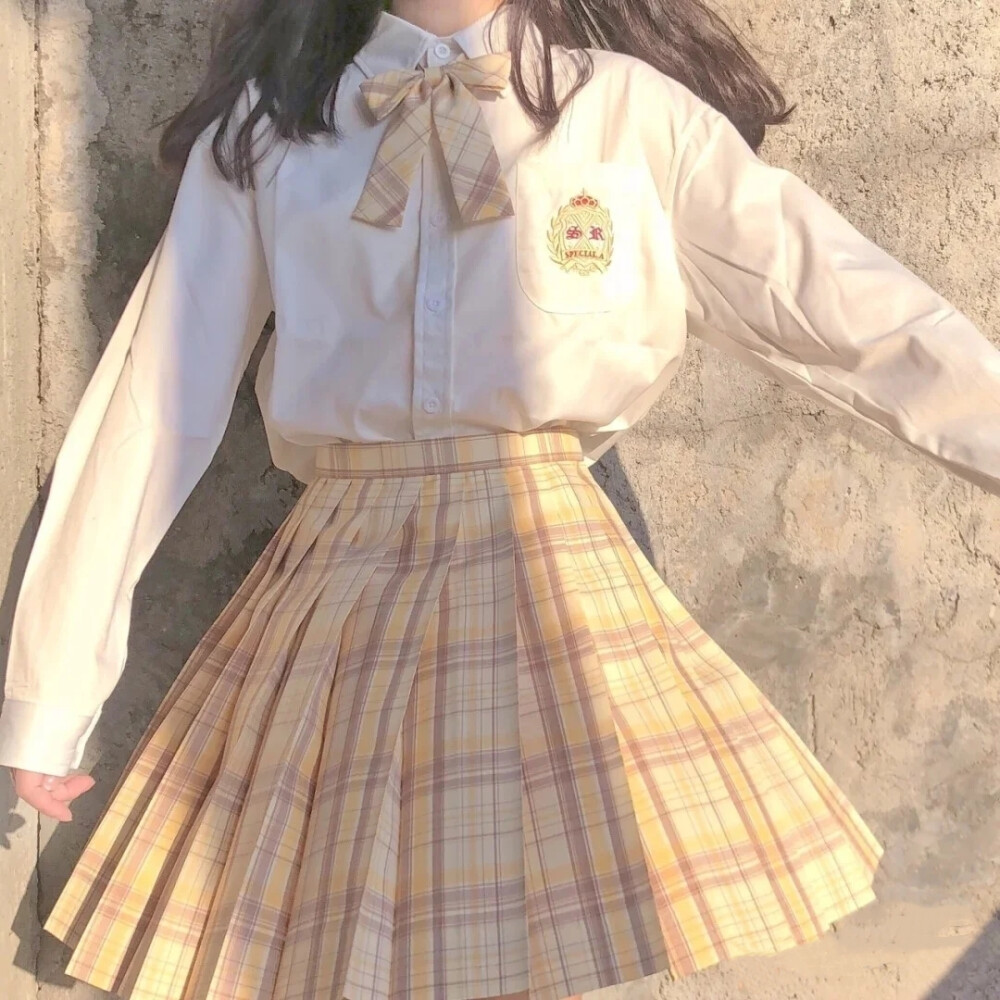 | |||
| 中文名:JK | 来源：jk制服最早的起源是从下装开始，明治开国时期，日本社会女权运动勃发， 资本时代到来，中产阶级妇女们开始参与工厂劳动，由于传统的振袖与留袖服装活动不便，妇女们便着家中男士穿剩的男袴。 但是此行为被当时社会认为是非常羞耻的，就像中国旧社会把女子的足露出来一样，终被明治政府禁止了。后即参照中国当时的服装发明了行灯袴， 前侧形同百褶窗，既方便行动又不会显出臀部的形状。而当时上流社会的女学生又是此服装的领潮者，很多学校便将行灯袴和式服装当作了当时的校服， 直至现在，女袴依然是日本很多大学的女子卒业服装。而行灯袴，便是类于百褶裙的前身。 | ||
| 外文名:jyoshikoukousei | |||
| 定义:时尚风格 | |||
| 分类：背心裙，夏服，中间服 | |||
| 所属人群：少女 | |||
| 相关书籍:三大主流 | |||
| 甜美 | 色彩上讲求柔和不跳跃，给人一种舒服清新的感觉，质地多以棉料、亚麻质地 甜美风分为森女淑女风格跟公主名媛风格。 森女风格多以宽松的裙装主，色彩上讲求柔和不跳跃，给人一种舒服清新的感觉，而公主名媛风格顾名思义就是多以精致的剪裁。 | ||
| 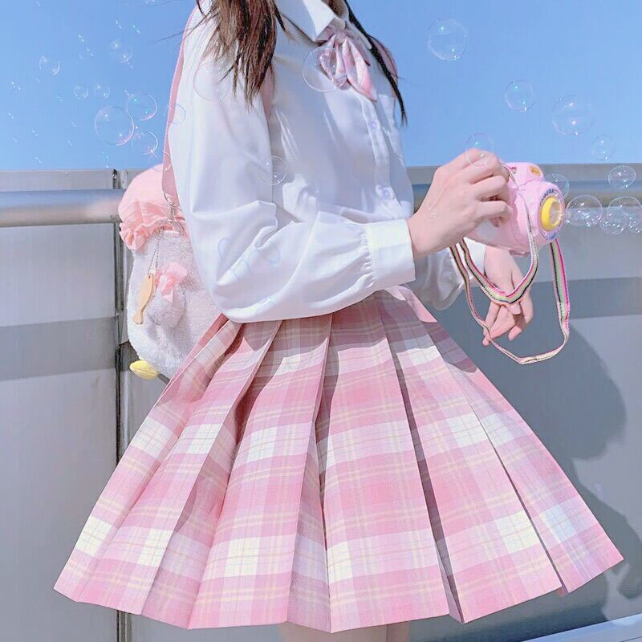 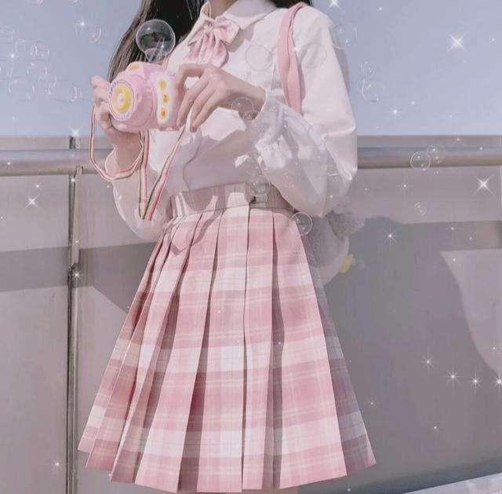 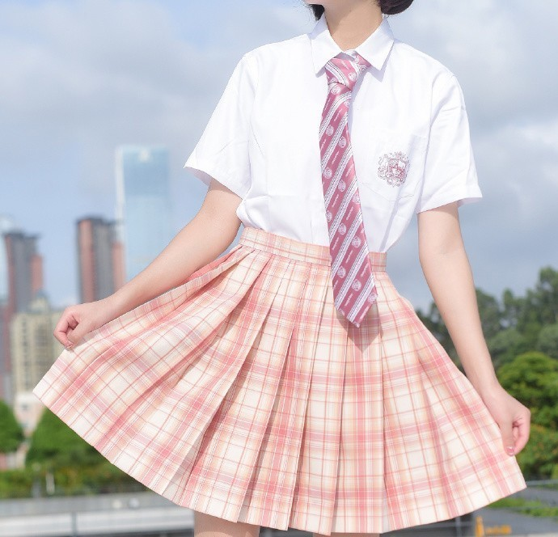 | |||
| 暗黑 | 色彩上给人一种暗黑色系，还有一丝酷酷风，质地多用于舒软纯棉. 艺术形式是夸张的，不对称的奇特的轻盈的复杂的和多装饰的，以频繁使用纵向延伸的线条的奇异特征。 | ||
|
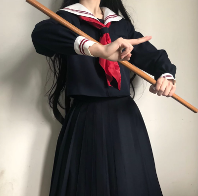
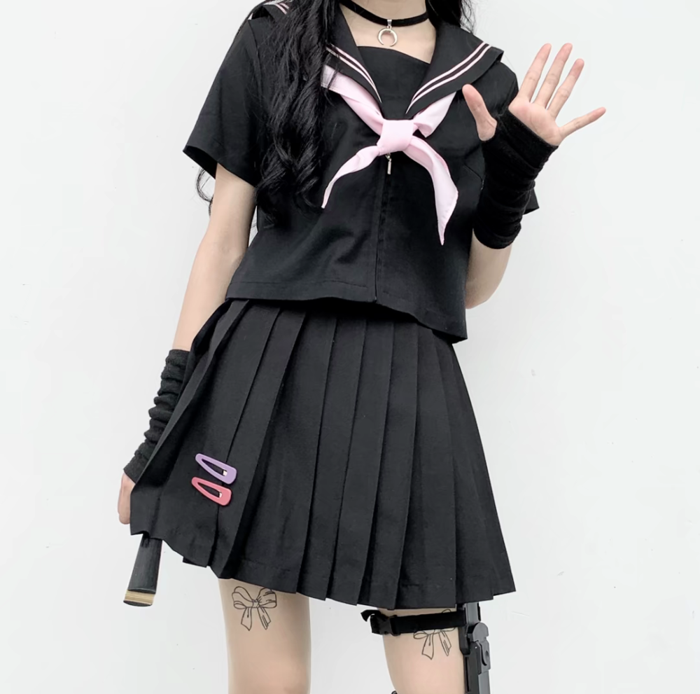
|
|||
| 海军 | 这种款型让女生对中性风格再次一见钟情，带点酷帅酷帅味道的海军风是今天的主流趋势。 海军风的味道弥漫在整个大街小巷中，无论是浪漫的小城市还是商业气味的大城市都是海军风的气息。 | ||
| 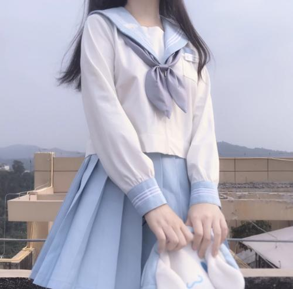 | 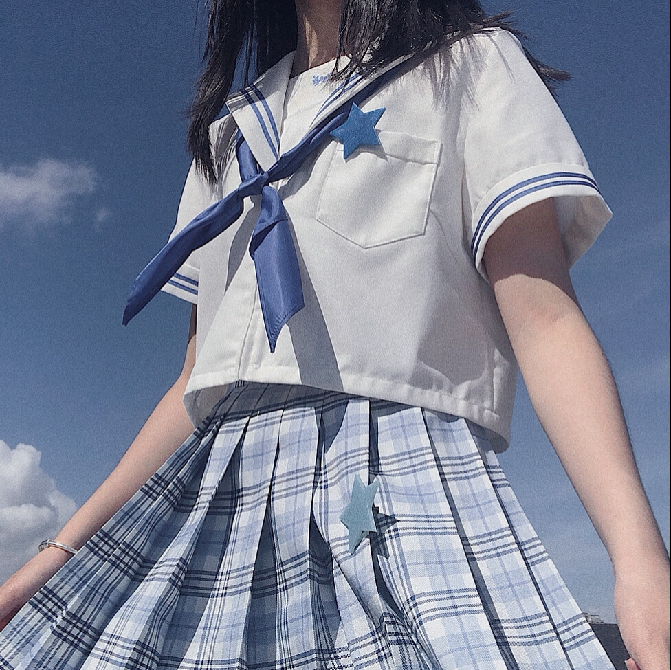 | 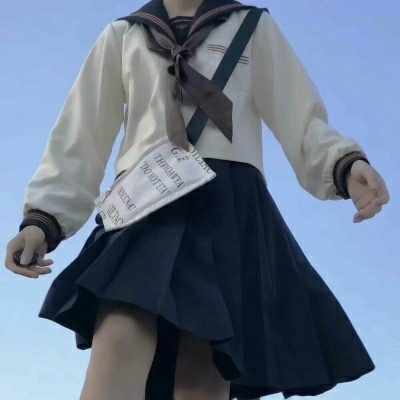 | |
| 领子类型 褶皱类型 | jk制服根据领子外形不同分为札幌襟，关东襟，关西襟，名古屋襟四个种类， 又根据领子上的襟线多少、颜色不同分为繁多的类型，襟线的颜色以及数量就是辨别类型的标准， 如:赤三本、黑一本、白无本等。 亲子线就是一宽一细两条襟线;还有变形襟，但本质上都是jk制服。 | ||
| 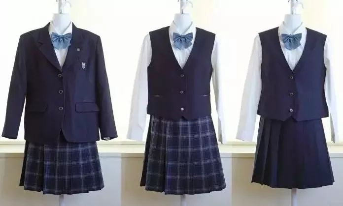 | 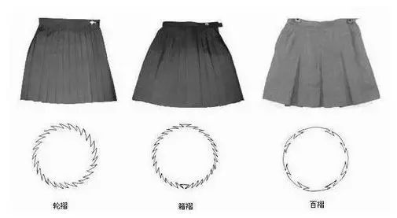 | 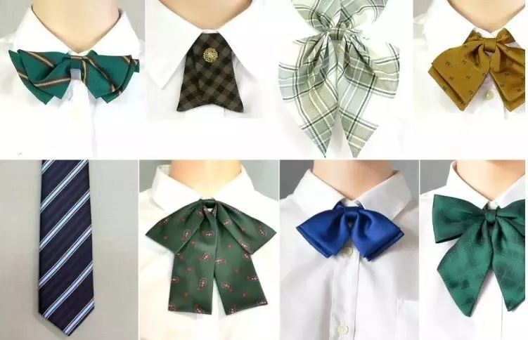 | |
| 主要简介:k制服中的jk意思为女子高中生，jk制服即女子高中生的制服。同样地，亦有dk制服，指男子高中生的制服。 jk制服分为水手服和西式制服两种，水手服按领襟的形状分为四种：札幌襟、关东襟、关西襟、名古屋襟，现在还出现了变形襟。 而“本”指的是襟线的根数，例如白一本即指领子上缝有一根白色的襟线，亲子指两条襟线一粗一细，异色指襟线颜色不同。 西式一般搭配是衬衫加百褶裙，配有领结或领带等装饰。百褶裙按款式分为轮褶、箱褶等，按图案分为纯色裙和格裙。一般水手服配纯色裙、西式着格裙。 此外还有背心裙、马甲等稍特殊的单品。 |
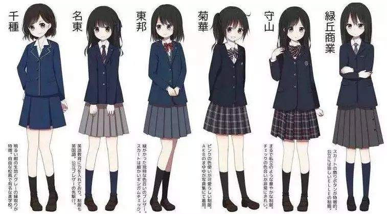 | ||
视频合集